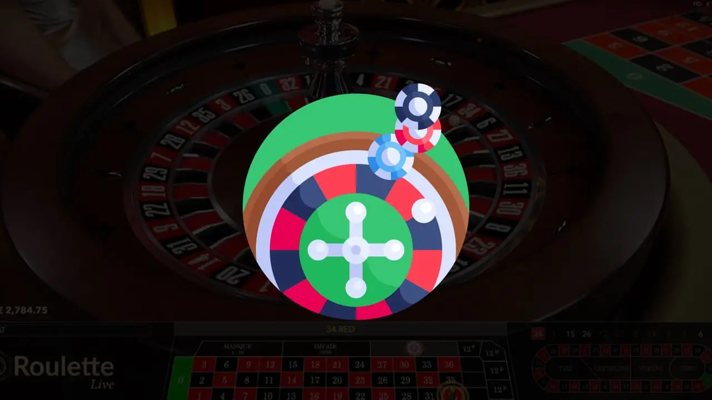

Martingale-Strategie: So funktioniert diese Casino-Strategie
Seit es Glücksspiele gibt, haben die Menschen alle möglichen Systeme gesucht und ausprobiert, um sich einen Vorteil zu verschaffen , wie der Martingale-Strategie. Früher wurden dabei alle möglichen Tricks angewandt, die sich auf die Automaten oder Spieltische auswirkten, aber das ist heute absolut nicht mehr möglich. Die in den Spielen verwendete Technologie ist so gut gesichert, dass Betrug oder Spielmanipulationen einfach nicht mehr möglich sind.
Wer sich heutzutage einen Vorteil gegenüber anderen Spielern oder dem Casino verschaffen will, kann dies nur auf zwei Arten tun. Erstens, indem er sich Wissen und Können über bestimmte Techniken aneignet, mit denen er sich einen Vorteil verschaffen kann. Dazu gehören das Zählen von Karten oder die Anwendung grundlegender Blackjack-Strategien . Der zweite Weg, der von den meisten Spielern genutzt wird, ist jedoch die Anwendung einer bestimmten Wettstrategie. In dieser Hinsicht ist die Martingale-Strategie eine der am weitesten verbreiteten, obwohl die Wirkung dieser Strategie in Frage gestellt wird, seit sie weltberühmt geworden ist.
Woher stammt das Martingale-Strategie?
Es wird angenommen, dass die Martingale-Strategie ihren Ursprung im 18. Immer mehr Glücksspieler begannen, diese Strategie zu nutzen, und zwangen die Kasinos, ihre Regeln anzupassen. Daraus kann man bereits schließen, dass die Strategie, als sie geboren wurde, in der Tat sehr effektiv war. Wäre dies nicht der Fall gewesen, hätten die Kasinos ihre Spiele nie anpassen müssen.
Eine der bemerkenswertesten Änderungen, die die Kasinos an ihren Spielen vorgenommen haben, war die Einführung von Tischlimits. Das bedeutet, dass die Einsätze an jedem Spieltisch niemals den Betrag überschreiten dürfen, der durch das Tischlimit angegeben ist. Diese Änderung, die Sie später in diesem Artikel lesen werden, hat dazu beigetragen, die Wirksamkeit der Martingale-Technik mehr oder weniger zunichte zu machen.
Wie funktioniert das Martingale-Strategie?
Die Martingale-Strategie ist eine Methode, die bei Spielen eingesetzt wird, bei denen es zwei Wettoptionen gibt. Denken Sie zum Beispiel an die Optionen rot/schwarz, gerade/gerade oder niedrig/hoch beim Roulette . Die Strategie kann aber auch beim Baccarat oder Blackjack angewendet werden.
Wenn es nur zwei mögliche Ergebnisse pro Spiel gibt, haben Sie jedes Mal eine 50 %ige Chance zu gewinnen. Wenn Sie mehrmals die falsche Wahl treffen, indem Sie zum Beispiel auf Rot setzen, dauert es in der Regel nicht lange, bis die Kugel beim Roulette wieder einmal auf Schwarz fällt. Und das Martingale basiert auf diesem Prinzip: Sie können oft auf Rot verlieren, aber die Kugel wird einmal auf Schwarz fallen.
Die Martingale-Startstrategie besagt, dass Sie bei einer verlorenen Spielrunde den Einsatz aus dieser Runde in der nächsten Spielrunde verdoppeln. Dann verdoppeln Sie Ihren Einsatz so lange, bis Sie eine weitere Spielrunde gewinnen. In diesem Fall haben Sie sofort alle Ihre Verluste ausgeglichen und können einen kleinen Gewinn verbuchen.
Zur Veranschaulichung hier ein kurzes Beispiel:
Angenommen, Sie setzen beim Roulette €1,- auf Rot und verlieren. Die Martingale-Strategie besagt, dass Sie dann in der nächsten Runde dieselbe Wettoption wählen und Ihren Einsatz verdoppeln. Sie setzen also erneut auf Rot und setzen jetzt €2,-. Wenn Sie erneut verlieren, setzen Sie erneut auf Rot und verdoppeln Ihren Einsatz auf €4,-. So geht es weiter, bis die Kugel einmal auf Rot fällt und Sie die Spielrunde gewinnen.
Ist das martingale-system rentabel?
Die Martingale-Strategie hat keinen direkten Einfluss auf die Höhe Ihrer Gewinnchancen. Diese Strategie garantiert Ihnen lediglich, dass Sie bei einem Gewinn alle vorherigen Verluste wieder wettgemacht haben.
Wenn Sie beim Roulette auf Rot setzen, haben Sie eine Gewinnchance von knapp 50 %. Es gibt einen grünen Bereich auf dem Roulettetisch, so dass die Chance nicht genau 50 % beträgt. Wenn Sie die Martingale-Strategie anwenden, ändern Sie diesen Prozentsatz nicht.
Die Strategie hat keinen Einfluss auf das Spiel selbst. Es kann passieren, dass Sie, nachdem Sie dreimal auf Rot gesetzt haben, einmal mit Schwarz gewinnen. Es kann aber genauso gut sein, dass es 15 Spielrunden dauert, bis Sie endlich einmal gewinnen.
Das Martingale-System ist also profitabel, wenn es Ihnen ermöglicht, Ihre Verluste ständig auszugleichen, hat aber ansonsten keinen Einfluss auf das Spiel.
Die umgekehrte martingale strategie
Die traditionelle Art, das Martingale-System anzuwenden, besteht darin, dass Sie Ihren Einsatz verdoppeln, wenn Sie einen Verlust erlitten haben. Bei der nächsten Wette verdoppeln Sie dann Ihren vorherigen Einsatz. Es ist jedoch auch möglich, die umgekehrte Martingale-Strategie anzuwenden. Hier verdoppeln Sie Ihren Einsatz nicht, wenn Sie einen Verlust erlitten haben, sondern wenn Sie eine Gewinnrunde gespielt haben.
Bei der umgekehrten Martingale-Strategie platzieren Sie einen Standardeinsatz, und wenn Sie verlieren, tun Sie nichts weiter. In der nächsten Runde setzen Sie wieder den gleichen Betrag. Wenn Sie aber gewinnen, verdoppeln Sie Ihren Einsatz aus der vorherigen Spielrunde wieder.
In der Praxis setzen Sie zum Beispiel €2,- auf Rot und verlieren die Spielrunde. In der nächsten Runde setzen Sie erneut €2,- auf Rot und gewinnen. Dann verdoppeln Sie Ihren Einsatz von €2,- auf €4,- und setzen erneut auf Rot. Wenn Sie wieder gewinnen, verdoppeln Sie erneut und setzen somit Ihren Grundeinsatz plus Ihren Gewinn. Das Einzige, was Sie dabei beachten müssen, ist, dass Sie einen bestimmten Betrag mit sich selbst vereinbaren müssen, um Ihre Gewinne mitzunehmen.
Angenommen, Sie haben viermal verdoppelt, dann haben Sie insgesamt €32,- und können sich entscheiden, zum Grundeinsatz zurückzukehren.
Die Martingale-Strategie ist eine der am weitesten verbreiteten Strategien in der Welt des Glücksspiels. Sie ist kein idiotensicheres System, da die Kasinos Tischlimits festgelegt haben. Daher kann Ihr Endverlust mit dem Martingale-System sehr schnell astronomische Beträge erreichen. Es macht Spaß, die Strategie anzuwenden, und wenn Sie es schaffen, nach zwei oder drei Spielrunden ein paar Mal zu gewinnen, werden Sie davon profitieren. Es ist jedoch nicht ratsam, Ihre gesamte Glücksspielstrategie ausschließlich auf die Martingale-Strategie zu stützen. Wenn Sie das wollen, ist es vielleicht besser, die umgekehrte Martingale-Strategie zu verwenden.